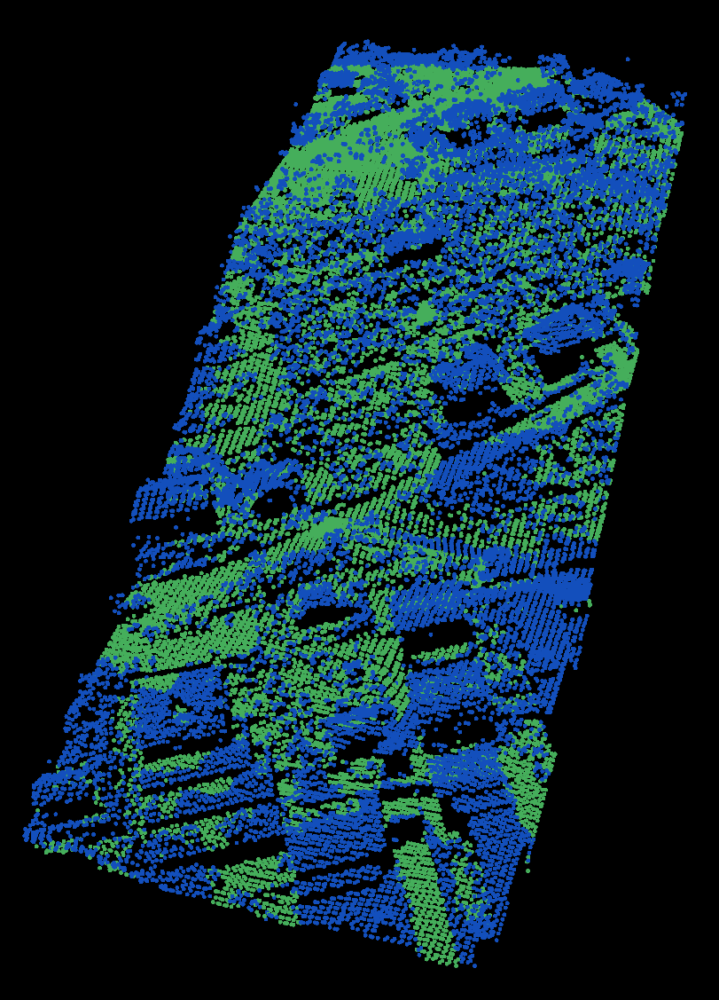

Identifying ground returns using ProgressiveMorphologicalFilter segmentation
Implements the Progressive Morphological Filter for segmentation of ground points.
Background
A complete description of the algorithm can be found in the article “A Progressive Morphological Filter for Removing Nonground Measurements from Airborne LIDAR Data” by K. Zhang, S. Chen, D. Whitman, M. Shyu, J. Yan, and C. Zhang.
The code
First, download the dataset samp11-utm.pcd and save it somewhere to disk.
Then, create a file, let’s say, bare_earth.cpp in your favorite editor, and
place the following inside it:
1 2 3 4 5 6 7 8 9 10 11 12 13 14 15 16 17 18 19 20 21 22 23 24 25 26 27 28 29 30 31 32 33 34 35 36 37 38 39 40 41 42 43 44 45 46 47 48 49 50 51 52 53 | #include <iostream>
#include <pcl/io/pcd_io.h>
#include <pcl/point_types.h>
#include <pcl/filters/extract_indices.h>
#include <pcl/segmentation/progressive_morphological_filter.h>
int
main (int argc, char** argv)
{
pcl::PointCloud<pcl::PointXYZ>::Ptr cloud (new pcl::PointCloud<pcl::PointXYZ>);
pcl::PointCloud<pcl::PointXYZ>::Ptr cloud_filtered (new pcl::PointCloud<pcl::PointXYZ>);
pcl::PointIndicesPtr ground (new pcl::PointIndices);
// Fill in the cloud data
pcl::PCDReader reader;
// Replace the path below with the path where you saved your file
reader.read<pcl::PointXYZ> ("samp11-utm.pcd", *cloud);
std::cerr << "Cloud before filtering: " << std::endl;
std::cerr << *cloud << std::endl;
// Create the filtering object
pcl::ProgressiveMorphologicalFilter<pcl::PointXYZ> pmf;
pmf.setInputCloud (cloud);
pmf.setMaxWindowSize (20);
pmf.setSlope (1.0f);
pmf.setInitialDistance (0.5f);
pmf.setMaxDistance (3.0f);
pmf.extract (ground->indices);
// Create the filtering object
pcl::ExtractIndices<pcl::PointXYZ> extract;
extract.setInputCloud (cloud);
extract.setIndices (ground);
extract.filter (*cloud_filtered);
std::cerr << "Ground cloud after filtering: " << std::endl;
std::cerr << *cloud_filtered << std::endl;
pcl::PCDWriter writer;
writer.write<pcl::PointXYZ> ("samp11-utm_ground.pcd", *cloud_filtered, false);
// Extract non-ground returns
extract.setNegative (true);
extract.filter (*cloud_filtered);
std::cerr << "Object cloud after filtering: " << std::endl;
std::cerr << *cloud_filtered << std::endl;
writer.write<pcl::PointXYZ> ("samp11-utm_object.pcd", *cloud_filtered, false);
return (0);
}
|
The explanation
Now, let’s break down the code piece by piece.
The following lines of code will read the point cloud data from disk.
// Fill in the cloud data
pcl::PCDReader reader;
// Replace the path below with the path where you saved your file
reader.read<pcl::PointXYZ> ("samp11-utm.pcd", *cloud);
Then, a pcl::ProgressiveMorphologicalFilter filter is created. The output (the indices of ground returns) is computed and stored in ground.
// Create the filtering object
pcl::ProgressiveMorphologicalFilter<pcl::PointXYZ> pmf;
pmf.setInputCloud (cloud);
pmf.setMaxWindowSize (20);
pmf.setSlope (1.0f);
pmf.setInitialDistance (0.5f);
pmf.setMaxDistance (3.0f);
pmf.extract (ground->indices);
To extract the ground points, the ground indices are passed into a pcl::ExtractIndices filter.
// Create the filtering object
pcl::ExtractIndices<pcl::PointXYZ> extract;
extract.setInputCloud (cloud);
extract.setIndices (ground);
extract.filter (*cloud_filtered);
The ground returns are written to disk for later inspection.
pcl::PCDWriter writer;
writer.write<pcl::PointXYZ> ("samp11-utm_ground.pcd", *cloud_filtered, false);
Then, the filter is called with the same parameters, but with the output negated, to obtain the non-ground (object) returns.
// Extract non-ground returns
extract.setNegative (true);
extract.filter (*cloud_filtered);
And the data is written back to disk.
writer.write<pcl::PointXYZ> ("samp11-utm_object.pcd", *cloud_filtered, false);
Compiling and running the program
Add the following lines to your CMakeLists.txt file:
1 2 3 4 5 6 7 8 9 10 11 12 | cmake_minimum_required(VERSION 2.8 FATAL_ERROR)
project(bare_earth)
find_package(PCL 1.7.2 REQUIRED)
include_directories(${PCL_INCLUDE_DIRS})
link_directories(${PCL_LIBRARY_DIRS})
add_definitions(${PCL_DEFINITIONS})
add_executable (bare_earth bare_earth.cpp)
target_link_libraries (bare_earth ${PCL_LIBRARIES})
|
After you have made the executable, you can run it. Simply do:
$ ./bare_earth
You will see something similar to:
Cloud before filtering:
points[]: 38010
width: 38010
height: 1
is_dense: 1
sensor origin (xyz): [0, 0, 0] / orientation (xyzw): [0, 0, 0, 1]
Ground cloud after filtering:
points[]: 18667
width: 18667
height: 1
is_dense: 1
sensor origin (xyz): [0, 0, 0] / orientation (xyzw): [0, 0, 0, 1]
Object cloud after filtering:
points[]: 19343
width: 19343
height: 1
is_dense: 1
sensor origin (xyz): [0, 0, 0] / orientation (xyzw): [0, 0, 0, 1]
You can also look at your outputs samp11-utm_inliers.pcd and samp11-utm_outliers.pcd:
$ ./pcl_viewer samp11-utm_ground.pcd samp11-utm_object.pcd
You are now able to see both the ground and object returns in one viewer. You should see something similar to this:
{kind=link}